Welcome to my Portfolio of Justice! Here, you’ll find a detailed account of the many adventures and daring feats accomplished by Sheriff Ringo. From capturing notorious criminals to protecting the innocent, each story showcases the bravery, quick thinking, and unwavering dedication of our beloved sheriff. Explore the tales of how Ringo outsmarted the cunning impostor, apprehended the elusive Bugs Bunny, and even faced off against the legendary Robin Hood. Discover the strategies he used to bring down the fearsome Child Eater and the clever tactics that ensured the safe passage of an old armadillo.Each entry is a testament to Sheriff Ringo’s commitment to keeping the town safe and ensuring justice prevails. Dive in and relive the thrilling moments that have made Sheriff Ringo a true hero in the eyes of the townsfolk.
Mission Statistics
Assassinations

Successful Assassinations: 5
Escorting

Successful Escorts: 4
Hunting

Successful Hunts: 3
Dueling

Duels Won: 3
Revenge

Successful Revenge Missions:2
Tracking
Successful Tracks: 4
Assassinations
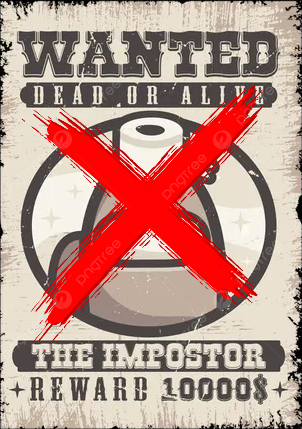
I had a hunch that the impostor was hiding among us. The town was on edge, and I knew I hඞd to act fast. I gathered the townsfolk and laid out a plan to flush out the impostor. We stඞrted by keeping a close eye on everyone’s actions. I noticed one of the crew members acting suspiciously, faking tඞsks and avoiding eye contact. My instincts told me this was our impostor. I followed them discreetly, wඞiting for the right moment. Finally, I caught them red-handed. With a swift move, I apprehended the impostor and revealed their true identity to the town. The impostor’s reign of terror was over, ඞnd peace was restored. It was ඞ proud moment for me as the sheriff, knowing I had protected my town once again.
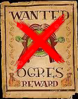
I knew taking down an ogre would be no small feat. The beast was terrorizing the outskirts of town, and it was up to me to put an end to it. I tracked the ogre to its lair, a dark cave on the edge of the forest. I waited until nightfall, using the cover of darkness to approach silently. The ogre was asleep, its snores echoing through the cave. I crept closer, careful not to make a sound. With a swift and precise strike, I aimed for its weak spot, delivering a fatal blow. The ogre roared in pain but quickly fell silent. The town was safe once more, and I had rid the land of a great menace. It was a dangerous mission, but justice had been served.
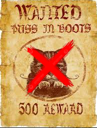
I knew Puss in Boots was a slippery one. His charm and agility made him a tough catch. I devised a plan involving a shiny, irresistible sword. When Puss in Boots spotted the sword, his eyes lit up. He couldn’t resist showing off his skills. As he leapt to grab it, I swiftly closed in and caught him mid-air. Puss tried to purr his way out, but this time, I had him. The town could rest easy, knowing the cunning cat was in custody.
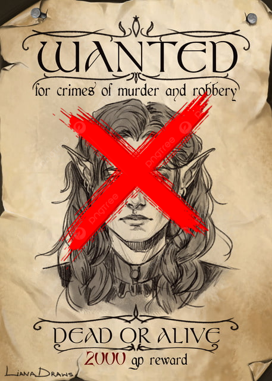
Tracking down the elf wanted for murder and robbery was a daunting task. The elf was known for his agility and cunning, making him a formidable opponent. The hunt led deep into the enchanted forest, where shadows played tricks on the eyes. Under the cover of night, the elf was finally spotted near a hidden grove. Moving silently, I approached, careful not to alert the target. The elf, unaware of the impending danger, was caught off guard. With a swift and precise shot, I delivered a fatal blow, ensuring the elf could no longer harm anyone. The mission was perilous, but justice was served, and the town could rest easy once more.
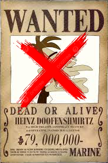
I knew Dr. Doofenshmirtz was a crafty villain with a knack for creating troublesome gadgets. We faced off in his high-tech lair, surrounded by his latest contraptions. Doofenshmirtz activated his newest inator, aiming to cause chaos. I stayed calm, dodging his attacks and looking for an opening. With a quick move, I used my lasso to snag his remote control, disabling his device. Doofenshmirtz tried to escape, but I was faster. I caught him before he could reach the exit, securing him with my trusty lasso. The town was safe once more, thanks to quick thinking and a well-aimed lasso.
Hunts
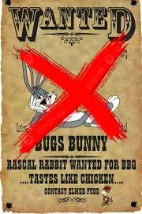
I had my eyes peeled for Bugs Bunny, the wily rabbit causing chaos in town. One day, I set a clever trap with a basket of carrots. Sure enough, Bugs couldn’t resist. Just as he reached for a carrot, I sprang the trap and caught him red-handed. Bugs tried to talk his way out, but this time, I had him. The town was safe once more, thanks to a well-placed carrot and a bit of quick thinking.
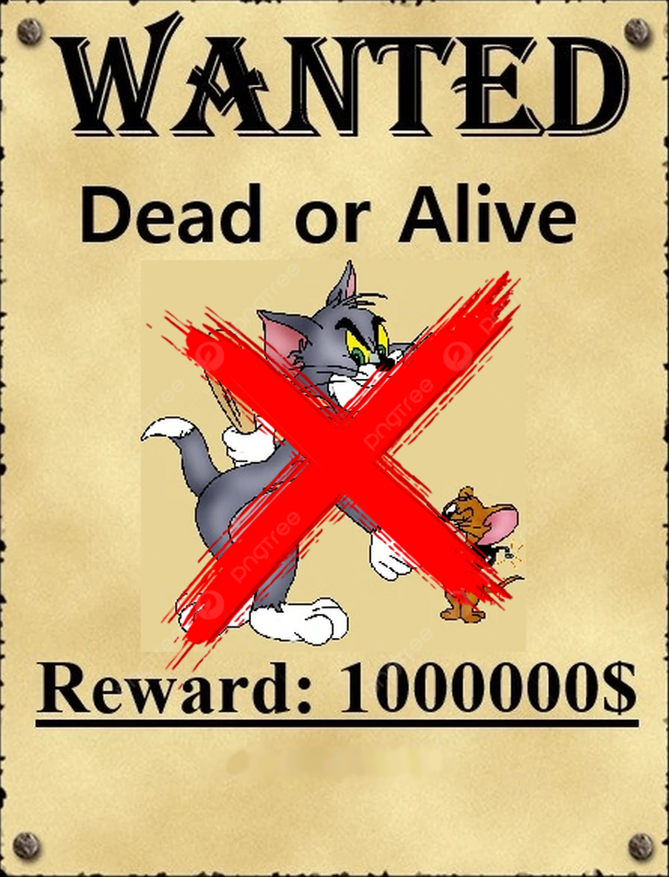
Tracking down the notorious duo, Tom and Jerry, was a unique challenge. Their endless chases and clever antics made them a tough pair to catch. I started by studying their patterns, noting the places they frequented and the tricks they often used. One evening, I set up a series of traps around the house, each designed to counter their usual escape routes. As expected, Tom chased Jerry right into my plan. Jerry darted through a narrow gap, only to find it blocked, while Tom’s pursuit led him into a cleverly disguised net. With both of them caught, I ensured they were safely secured. The town could finally enjoy some peace, knowing the mischievous duo was no longer causing chaos. It was a tricky mission, but with patience and strategy, justice was served.
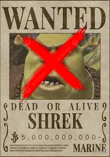
Tracking down Shrek was a formidable task. The ogre was known for his strength and his deep connection to the swamp. I ventured into the murky depths of the swamp, where the air was thick with mist and the ground treacherous. Using my knowledge of the terrain, I set up a series of traps, each designed to counter Shrek’s immense strength. I waited patiently, hidden among the reeds. As Shrek approached, drawn by the disturbance, he triggered one of the traps. With a swift move, I closed in, using my agility to outmaneuver him. Despite his size and power, Shrek was caught off guard. With a well-placed lasso, I secured him, ensuring he couldn’t escape. The town could finally rest easy, knowing the ogre was no longer a threat. It was a challenging hunt, but justice prevailed.
Duels
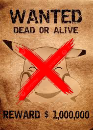
I knew a duel with Pikachu would be electrifying. We faced off at high noon, the town square buzzing with anticipation. Pikachu’s cheeks sparked with electricity, ready to strike. I stayed calm and focused, waiting for Pikachu to make the first move. With a flash, Pikachu launched a Thunderbolt attack. I dodged swiftly, using my agility to avoid the blasts. Timing my move perfectly, I threw my lasso, catching Pikachu mid-air. With a gentle but firm tug, I brought Pikachu to the ground, disarming him of his electric charge. The crowd cheered as I stood victorious, having outsmarted the quick and powerful Pikachu. The town was safe once again, thanks to a well-timed lasso and a bit of quick thinking.
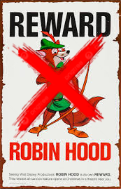
I knew Robin Hood was a master archer and a cunning opponent. We faced off in Sherwood Forest, the air thick with tension. Robin drew his bow, an arrow ready to fly. I stayed calm, my eyes locked on his every move. As he released the arrow, I dodged swiftly and closed the distance between us. With a quick flick of my wrist, I disarmed him, sending his bow flying. Robin tried to outmaneuver me, but I was ready. With a swift move, I caught him and secured his hands. The legendary outlaw was finally in custody, and the town could breathe easy once more.
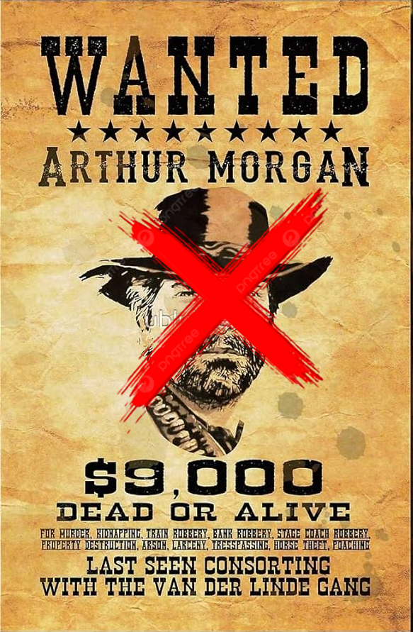
Facing Arthur Morgan in a duel was a test of skill and nerve. The showdown took place at dawn, the town square silent and tense. Arthur, known for his quick draw and sharp aim, stood ready. I kept my hand steady, eyes locked on Arthur. As the clock struck, we both moved in a blur. Arthur’s hand went for his gun, but I was faster. With a swift draw, I fired, my shot hitting its mark. Arthur staggered, his gun falling from his hand. The duel was over in a heartbeat, and I stood victorious. The town watched in awe as I holstered my weapon, knowing that justice had been served once again.
Revenge
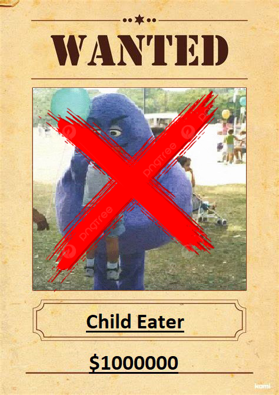
I knew the Child Eater was a monstrous figure who had to be stopped. The town was gripped with fear, and I vowed to bring justice for the families affected. I tracked the Child Eater to his lair deep in the forest, using every bit of my tracking skills. The air was thick with tension as I approached. I set a trap, using a decoy to lure him out. When he emerged, I confronted him head-on. With a fierce determination, I fought the Child Eater, using my agility and quick thinking to outmaneuver him. Finally, with a well-aimed shot, I brought him down. The town could finally rest easy, knowing the Child Eater would harm no one ever again. Justice was served, and the families had their closure.
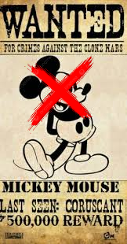
Tracking down Mickey Mouse to get revenge for the pain and suffering he caused was a delicate mission. The town had suffered under his mischievous antics, and it was time to put an end to it. I followed the trail of chaos to his hideout in an abandoned amusement park. The place was eerie, filled with the echoes of laughter long gone. I moved silently, using the shadows to my advantage. Mickey, unaware of my presence, was busy plotting his next scheme. With a swift and calculated move, I confronted him. Mickey tried to escape, but I was faster. Using my lasso, I caught him and brought him to justice. The town could finally breathe a sigh of relief, knowing that the source of their suffering was no longer a threat. Justice was served, and peace was restored.
Tracks
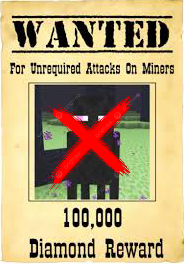
Tracking down the elusive Enderman was no easy feat. I knew they only appeared in the darkest corners of the world. I ventured into the Overworld at night, keeping my eyes peeled for their tall, shadowy figures. Listening for their eerie, robotic whine, I finally spotted one near a cluster of trees. The Enderman tried to teleport away, but I was ready. With a quick move, I used a water bucket to trap it, knowing they couldn’t stand water. The Enderman was cornered, and with a swift lasso, I secured it. The town could rest easy, knowing the mysterious creature was no longer a threat.
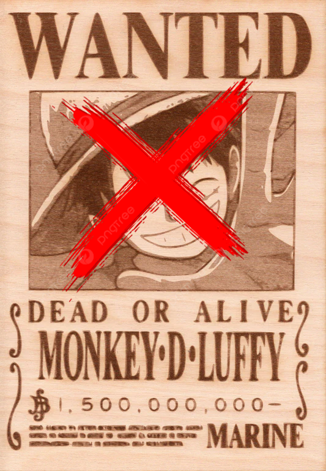
Tracking Monkey D. Luffy was no ordinary task. Known for his boundless energy and rubbery abilities, Luffy was always on the move. I started by gathering information from various ports and islands, piecing together his recent activities. The trail led me to the Grand Line, a treacherous sea where only the bravest dared to venture. I navigated through storms and sea monsters, following the whispers of Luffy’s encounters. Each clue brought me closer, from tales of his battles with powerful foes to sightings of his iconic straw hat. Finally, I found him on a remote island, training with his crew. Luffy, ever the spirited fighter, was ready for a challenge. But this time, I was prepared. Using my wits and agility, I managed to corner him, ensuring he couldn’t escape. The mission was tough, but justice was served, and the town could rest easy knowing Luffy was no longer a threat.
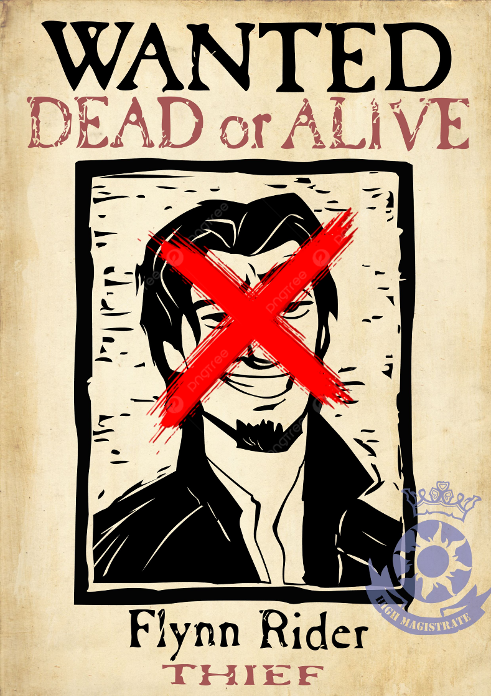
Tracking Flynn Rider was a challenging task. Known for his charm and quick wit, Flynn was a master at evading capture. I started by gathering intel from the townsfolk, piecing together his last known whereabouts. The trail led me to the dense forests surrounding the kingdom. I moved cautiously, aware of Flynn’s knack for setting traps. Following subtle clues, like broken branches and faint footprints, I finally spotted him near a hidden cave. Flynn, sensing he was being followed, tried to make a run for it. But I was ready. With a swift move, I cornered him, blocking his escape routes. Despite his attempts to talk his way out, I secured him and brought him to justice. The town could finally rest easy, knowing the notorious thief was no longer a threat.
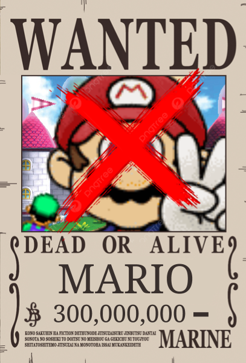
Tracking Mario was a unique challenge. Known for his agility and resourcefulness, Mario was always one step ahead. I started by gathering clues from various kingdoms, piecing together his recent activities. The trail led me through the Mushroom Kingdom, past Goombas and Koopa Troopas. I navigated through pipes and dodged Piranha Plants, following the faint traces of Mario’s presence. Each clue brought me closer, from the stomped Goombas to the scattered coins. Finally, I found him near Princess Peach’s castle, preparing for his next adventure. Mario, ever the hero, was ready for a challenge. But this time, I was prepared. Using my wits and agility, I managed to corner him, ensuring he couldn’t escape. The mission was tough, but justice was served, and the town could rest easy knowing Mario was no longer a threat.
Escorts
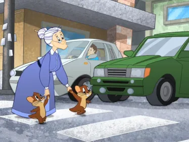
Helping an old lady across the street was a simple yet important task. The busy town square was bustling with activity, and she looked hesitant to cross. I approached her with a warm smile and offered my arm. “May I assist you, ma’am?” I asked gently. She nodded, grateful for the help. Together, we navigated through the crowd, me ensuring she felt safe and steady with each step. We reached the other side without a hitch. She thanked me with a kind smile, and I tipped my hat in return. It was a small act of kindness, but it made a big difference in her day. The town felt a little brighter, knowing that everyone, no matter how small the task, was looked after.
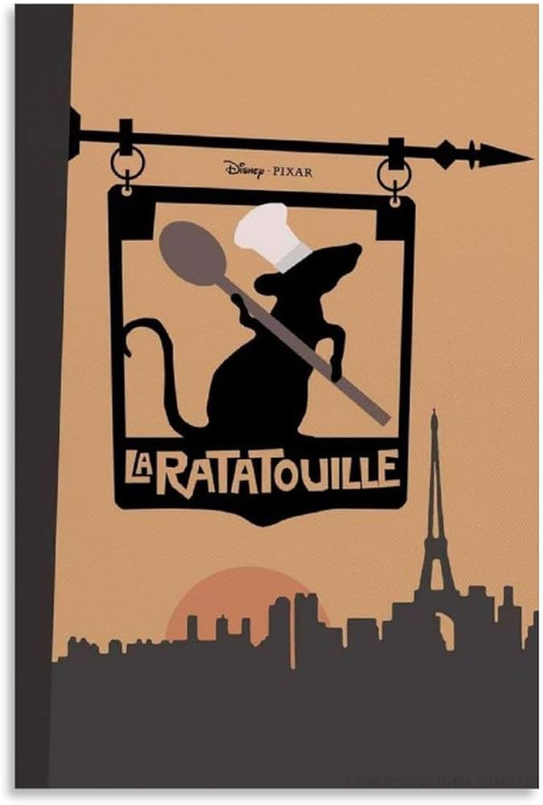
Helping a rat open a restaurant was an unusual but rewarding task. The rat, named Remy, had a passion for cooking and a dream of running his own place. I decided to lend a hand. First, we scouted the perfect location, a cozy spot in the heart of town. I helped Remy gather the necessary permits and licenses, navigating the bureaucratic maze with ease. Next, we worked on setting up the kitchen, ensuring it was equipped with everything Remy needed to create his culinary masterpieces. With the restaurant ready, we focused on the menu. Remy whipped up some incredible dishes, and I helped with the taste testing and presentation. Finally, we opened the doors to the public. The townsfolk were amazed by the delicious food and the unique concept. Remy’s restaurant quickly became a hit, and I was proud to have played a part in making his dream come true. It was a unique adventure, but seeing Remy’s joy and the town’s excitement made it all worthwhile.
One afternoon, I noticed an old lady struggling with her groceries outside the market. Her bags were heavy, and she looked exhausted. I quickly approached her with a friendly smile. “Let me help you with those,” I offered, taking the bags from her hands. She sighed in relief and thanked me. We walked together to her home, chatting about the weather and her garden along the way. When we arrived, I helped her put the groceries away, making sure everything was in its place. She was grateful for the assistance and offered me a cup of tea as a thank you. It was a small act, but it made her day a little easier, and that made all the difference. The town felt a bit more connected, knowing that everyone looked out for one another.
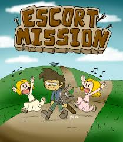
Helping two annoying kids safely get to the next town was a test of patience and perseverance. The kids, full of energy and mischief, needed to reach their relatives in the neighboring town. I started by setting clear rules for the journey, making sure they understood the importance of staying together and listening to instructions. As we walked, the kids constantly tried to wander off or play pranks, but I kept a watchful eye on them. We encountered a few challenges along the way, like crossing a busy road and navigating through a dense forest. Each time, I guided them carefully, ensuring their safety. Despite their antics, I managed to keep them on track with a mix of firm guidance and light-hearted distractions. Finally, we reached the next town, and the kids were reunited with their relatives. They thanked me, and despite the chaos, I felt a sense of accomplishment. It was a challenging journey, but ensuring their safety made it all worthwhile.
Titles recieved
✪Sheriff of Dirt✪
✪Hawk Hunter✪
✪Outlaw Tamer✪
✪Desert Defender✪
✪Champion of the Cacti✪
✪Trailblazer of the Tumbleweeds✪